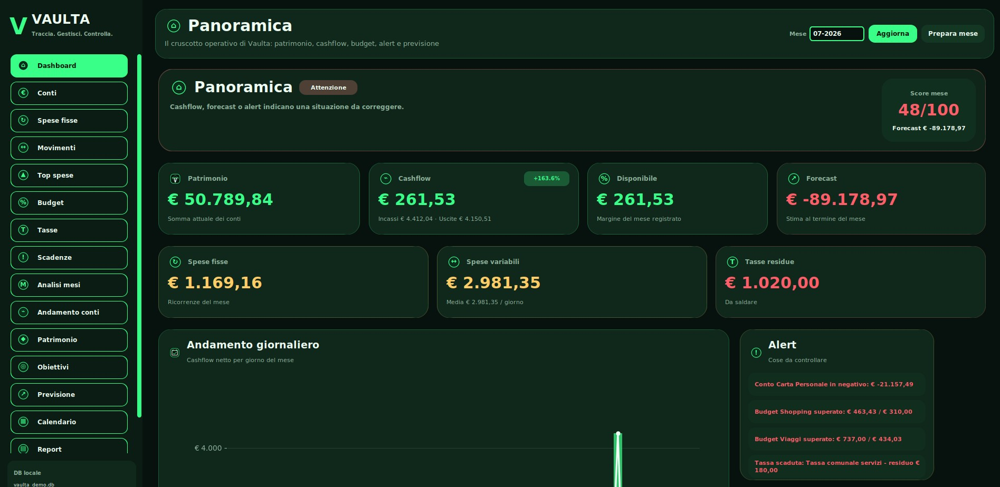
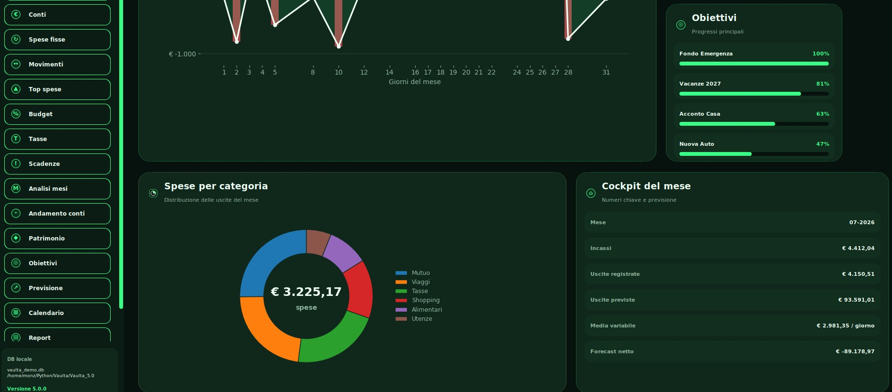
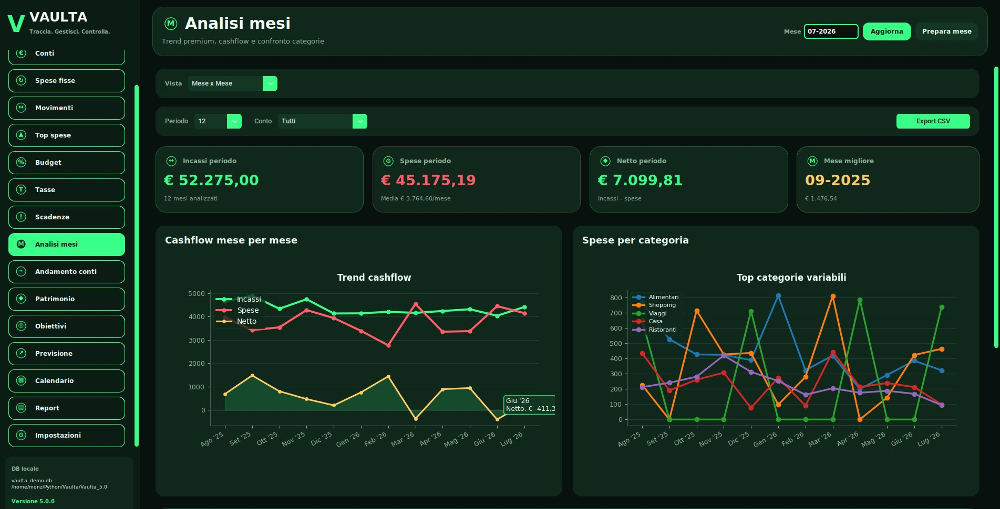

Conti multipli
Gestisci conti correnti, risparmi, carta, contanti e fondi.
Gestisci conti, movimenti, budget, obiettivi, tasse e patrimonio in un'unica applicazione desktop, completamente offline.

Panoramica
Vaulta riassume patrimonio, cashflow, budget, obiettivi, alert e previsione fine mese in una schermata chiara e immediata.

Funzioni
Vaulta non è un foglio Excel mascherato: è un ambiente completo per controllare il presente e pianificare il futuro.
Gestisci conti correnti, risparmi, carta, contanti e fondi.
Entrate, uscite e trasferimenti con categorie e note.
Limiti mensili, percentuali e alert quando superi la soglia.
Monitora progressi, scadenze e obiettivi completati.
Grafici automatici su categorie, giorni, mesi e andamento.
Pagamenti, scadenze, parziali e importi residui.
Calendario mensile con ricorrenze e promemoria.
Dati locali e salvataggi manuali per lavorare in sicurezza.
Screenshot reali
Schermate reali del programma con database demo, pensate per mostrare l'esperienza completa.

Analisi
Vaulta crea automaticamente grafici, confronti e riepiloghi. Tu inserisci i movimenti, il programma ti aiuta a leggere la situazione.
Perché non Excel?
Licenza
Nessun abbonamento, nessun cloud obbligatorio, nessuna registrazione per usare il programma.
Include versione Windows, versione Linux, documentazione e supporto all'installazione.
Privacy
Vaulta lavora offline con database locale SQLite. Non obbliga a usare cloud, account online o sincronizzazioni esterne.
FAQ
No. Vaulta funziona completamente offline.
Sì, il pacchetto include la versione Windows.
Sì, è incluso anche il pacchetto Linux.
Sul tuo computer, in un database locale.
No, Vaulta è pensato con licenza permanente.
Sì, puoi contattare lo sviluppatore via email.
Vaulta 5.0 ti dà una panoramica completa, locale e immediata.
Acquista ora a €14,90